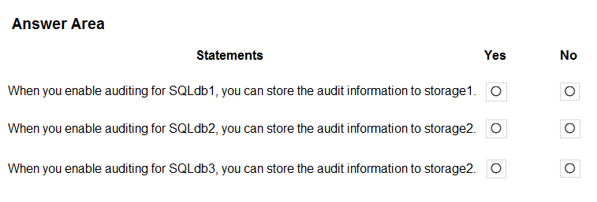

HOTSPOT -
You have an Azure subscription that contains the SQL servers on Azure shown in the following table.
The subscription contains the storage accounts shown in the following table.
You create the Azure SQL databases shown in the following table.
For each of the following statements, select Yes if the statement is true. Otherwise, select No.
NOTE: Each correct selection is worth one point.
Hot Area:

A company has a hybrid ASP.NET Web API application that is based on a software as a service (SaaS) offering.
Users report general issues with the data. You advise the company to implement live monitoring and use ad hoc queries on stored JSON data. You also advise the company to set up smart alerting to detect anomalies in the data.
You need to recommend a solution to set up smart alerting.
What should you recommend?
Correct Answer:
B
Application Insights, a feature of Azure Monitor, is an extensible Application Performance Management (APM) service for developers and DevOps professionals.
Use it to monitor your live applications. It will automatically detect performance anomalies, and includes powerful analytics tools to help you diagnose issues and to understand what users actually do with your app.
Reference:
https://docs.microsoft.com/en-us/azure/azure-monitor/app/app-insights-overview
You have an Azure subscription that is linked to an Azure Active Directory (Azure AD) tenant. The subscription contains 10 resource groups, one for each department at your company.
Each department has a specific spending limit for its Azure resources.
You need to ensure that when a department reaches its spending limit, the compute resources of the department shut down automatically.
Which two features should you include in the solution? Each correct answer presents part of the solution.
NOTE: Each correct selection is worth one point.
Correct Answer:
CD
C: The spending limit in Azure prevents spending over your credit amount. All new customers who sign up for an Azure free account or subscription types that include credits over multiple months have the spending limit turned on by default. The spending limit is equal to the amount of credit and it canג€™t be changed.
D: Turn on the spending limit after removing
This feature is available only when the spending limit has been removed indefinitely for subscription types that include credits over multiple months. You can use this feature to turn on your spending limit automatically at the start of the next billing period.
1. Sign in to the Azure portal as the Account Administrator.
2. Search for Cost Management + Billing.
3. Etc.
Reference:
https://docs.microsoft.com/en-us/azure/cost-management-billing/manage/spending-limit
HOTSPOT -
You have an Azure subscription that contains the resources shown in the following table.
You create an Azure SQL database named DB1 that is hosted in the East US region.
To DB1, you add a diagnostic setting named Settings1. Settings1 archives SQLInsights to storage1 and sends SQLInsights to Workspace1.
For each of the following statements, select Yes if the statement is true, Otherwise, select No.
Hot Area:
Correct Answer:
Box 1: No -
You archive logs only to Azure Storage accounts.
Box 2: Yes -
Box 3: Yes -
Sending logs to Event Hubs allows you to stream data to external systems such as third-party SIEMs and other log analytics solutions.
Note: A single diagnostic setting can define no more than one of each of the destinations. If you want to send data to more than one of a particular destination type
(for example, two different Log Analytics workspaces), then create multiple settings. Each resource can have up to 5 diagnostic settings.
Reference:
https://docs.microsoft.com/en-us/azure/azure-monitor/platform/diagnostic-settings